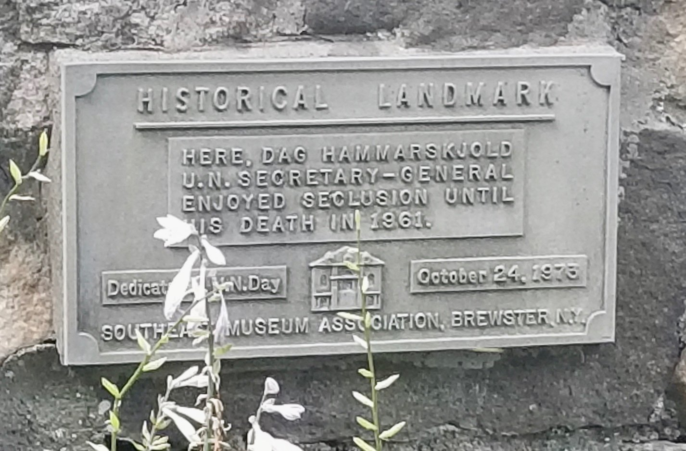
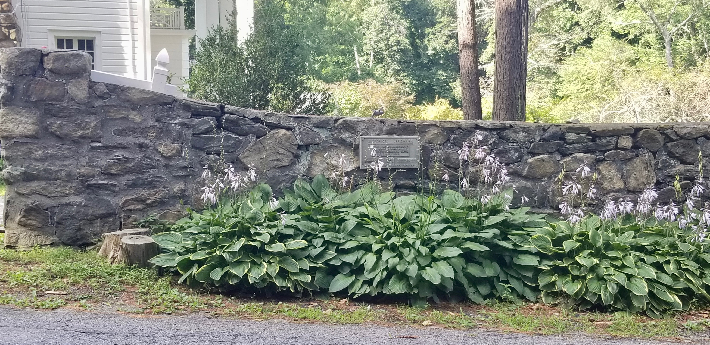

Dag Hammarskjöld
The country house on Foggintown Road that the second Secretary-General of the United Nations used as a weekend retreat from 1953 until his death in 1961.


HISTORICAL LANDMARK
Here, Dag Hammarskjold U.N. Secretary-General
enjoyed seclusion until his death in 1961.
Dedicated on U.N. Day · October 24, 1973
About this Marker
Dag Hjalmar Agne Carl Hammarskjöld (July 29, 1905 – September 18, 1961) was a Swedish economist and diplomat, the second Secretary-General of the United Nations, who served from April 1953 until his death in a plane crash a little over eight years later. The plaque on Foggintown Road marks the country house, two miles north of Brewster village, that Hammarskjöld used as a weekend retreat throughout those eight years. He did not own the property: the house was rented to the United Nations from its owner, Mrs. Olga Freeman of Brewster, for Hammarskjöld’s use during his tenure as Secretary-General.
What the Southeast Museum Association chose to commemorate, in the plaque’s simple and striking phrase, is the seclusion. Not the diplomacy, not the Nobel Peace Prize, not the office — the privacy of a hard-driven public man at his small country house on a back road in Putnam County.
The dedication ceremony
The Southeast Museum Association dedicated the plaque on October 24, 1973 — United Nations Day, twelve years after Hammarskjöld’s death and twenty-eight years to the day after the UN Charter took force in 1945. The ceremony drew a notable list of speakers to a small back road in Putnam County: Mrs. Olga Freeman herself, the owner who had rented the house to the United Nations; Knut Hammarskjöld, the late Secretary-General’s nephew (then the Director General of the International Air Transport Association); H.E. Olof Rydbeck, the Permanent Representative of Sweden to the United Nations; and Brian Urquhart, then UN Under-Secretary-General and a longtime senior Hammarskjöld colleague. Several hundred members of the public and representatives of local civic organizations attended.
September 18, 1961
Hammarskjöld died on the night of September 17–18, 1961 when the DC-6 carrying him to ceasefire negotiations during the Congo Crisis crashed in dense bush near Ndola, in the British colony of Northern Rhodesia (today Zambia). All sixteen people on board were killed. He was 56 years old. In December he became the only person ever awarded the Nobel Peace Prize posthumously. President Kennedy called him “the greatest statesman of our century.” The exact cause of the crash has been debated for more than sixty years; a 2017 reopening of the UN investigation, conducted by former Tanzanian Chief Justice Mohamed Chande Othman, found new evidence supporting “a significant possibility” of external attack on the aircraft. No party has ever been formally held responsible, and the case remains officially open at the UN.
The house itself has a deep local history that predates Hammarskjöld by more than a century and a half — from Lot 8 of the Philipse Patent through the Gay family of Foggintown to its mid-twentieth-century ownership by Olga Freeman. For a longer property narrative, see the research piece on The Hammarskjöld House on Foggintown Road.
Town of Southeast, NY
Private residence; plaque on stone wall in plain view from the public road
(41.441500°, −73.587600°)
Sources
- On-site photographs of the Southeast Museum Association plaque (1973) on the stone wall in front of the house on Foggintown Road.
- Dag Hammarskjöld and 1961 Ndola United Nations DC-6 crash, Wikipedia — for biographical material on Hammarskjöld’s tenure as Secretary-General, the September 18, 1961 plane crash near Ndola in Northern Rhodesia, the posthumous Nobel Peace Prize, and the 2017 Othman investigation.
- United Nations: “Dag Hammarskjöld” (un.org/dag-hammarskjold) — official UN biographical page.
- The 1973 dedication-ceremony details (Mrs. Olga Freeman, Knut Hammarskjöld, Ambassador Olof Rydbeck, Brian Urquhart) come from project research on the plaque and the 1973 ceremony, treated in greater depth on the Hammarskjöld House research piece.